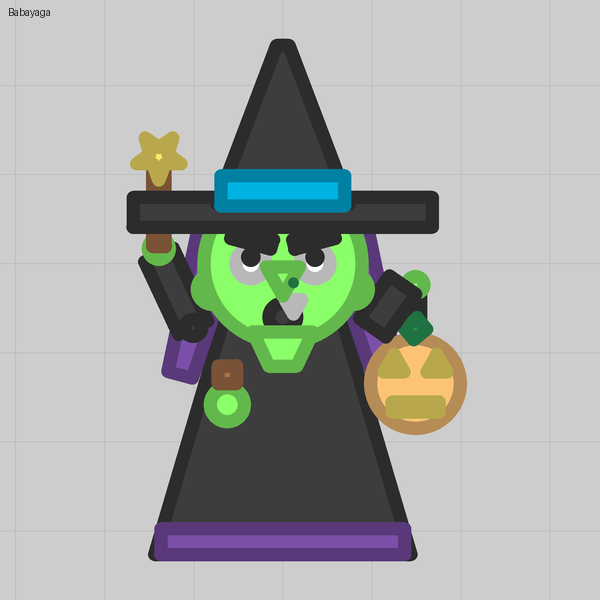
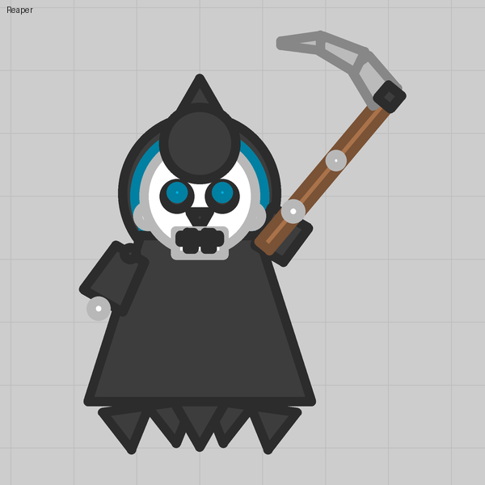
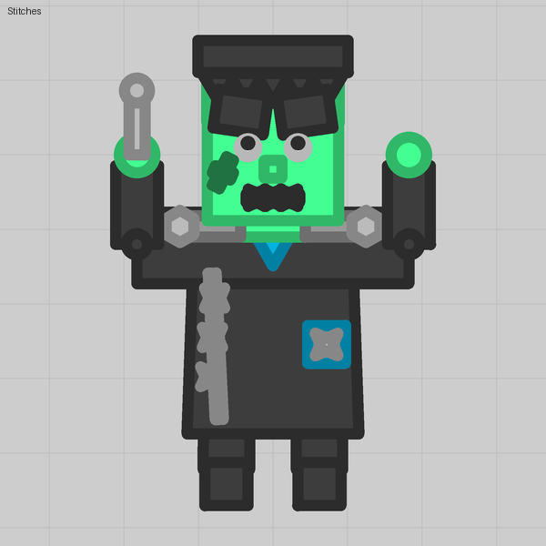

A hand that follows the cursor
An auto turret with Range 0 that aims with the cursor rests at its Facing, swings to the cursor while you hold fire, and drops back when you let go.
What you see
An arm holding a wand. At rest it hangs to the side; hold fire and it reaches toward the cursor; let go and it drops back. Every held thing in our packs works this way: wands, scythes, wrenches, candy bags, thrown bats.
The trick
Two settings on one auto turret. Range 0 so it never looks for enemies, and Aims with the cursor (Auto Smasher) on so the player steers it. With both, the turret rests at its Facing until the fire button is held, then turns to the cursor inside its Arc, and returns to rest on release. What it carries makes no difference: a bare rod, a drawn hand, even a gun.
Numbers that matter
| Field | Value | Notes |
|---|---|---|
| Range | 0 | Any other value makes it track enemies as well (lesson 09) |
| Aims with the cursor | on | Off, it is a fixed prop |
| Facing | 35 | The rest pose. 0 reads as "always points at the cursor", since the body does too |
| Arc | 70 | Always set one: a pivot with Arc 0 wanders when released |
| Base size | 8 | Small enough to read as a joint |
Gotchas
- It follows the cursor only while the cursor is inside its wedge (Facing ± Arc). An arm resting backward never reaches a forward cursor.
- A gun that Fires on right click mounted on such a pivot never fires at all. Put that gun on the body instead, invisible, where the held item rests, and keep the drawing on the pivot.
- A gun that fires on the left button works fine on the pivot and aims with it: a wand that shoots stars.
Where we used it


